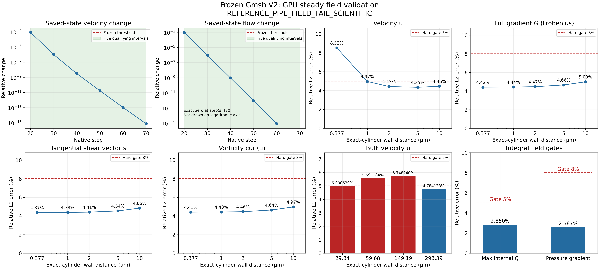
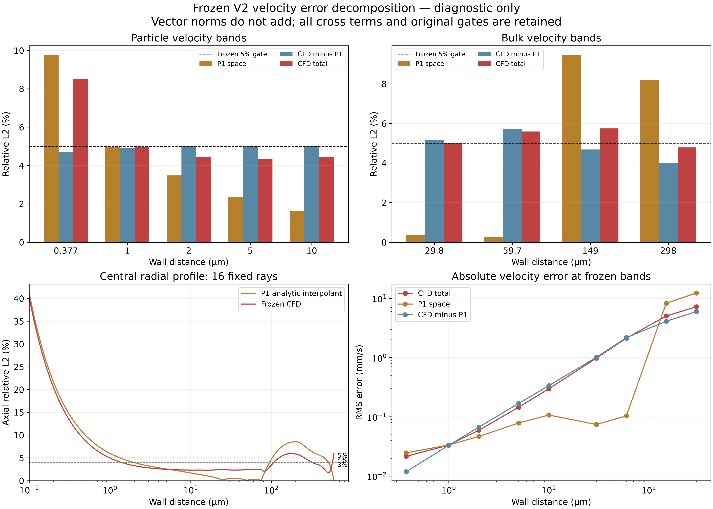
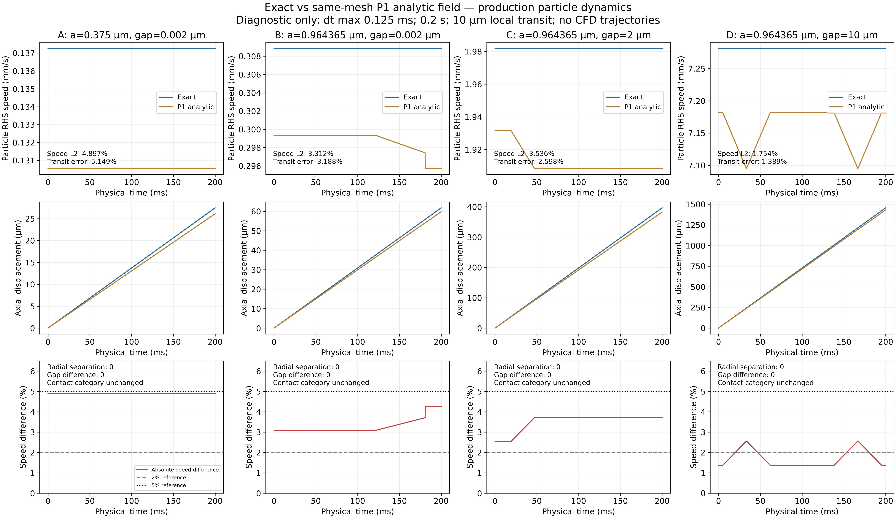

REFERENCE_PIPE_FIELD_FAIL_SCIENTIFIC · MIXED_FIELD_ERROR · P1_FIELD_TRAJECTORY_IMPACT_LARGE（DIAGNOSTIC_ONLY）
GPU steady已完成，局部场精度gate失败。V3、正式CFD-vs-oracle、dt convergence、新BraVa validation均NOT_RUN。A局部10µm transit差5.148892%；四组无径向分离、gap/contact类别改变。负cross-term不能通过百分数相减处理。
总报告 · 冻结场验证 · 误差分解与诊断 · V2 mesh QA · 开发范围



仅显示既有最终PNG；本轮未生成新网格、CFD或轨迹。历史路线见 退休索引。